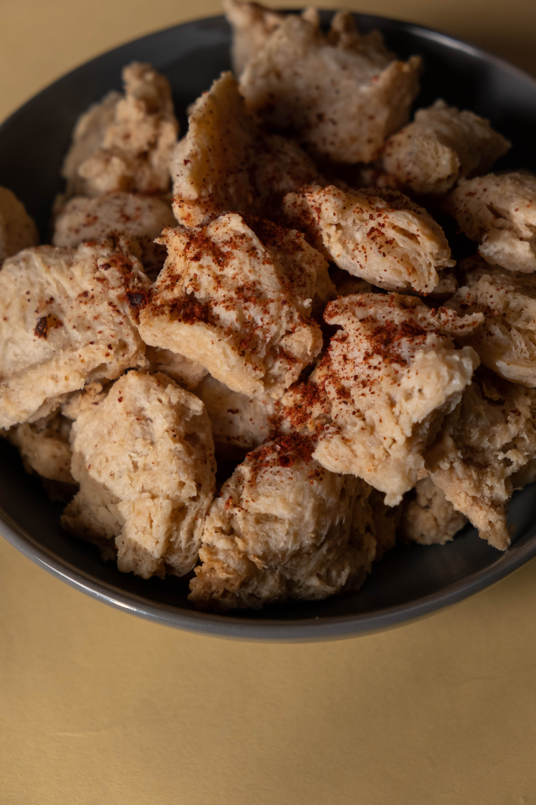

Soyabean

Incredient required
- soya chunks
- garlic powder
- tomatos
- salt
- chilli
- onion
Procedure
- Cut the onion and tomatos in small pieces and gring together to get a paste
- Prepare a Frying pan put 2 table spoon of oil and make it hot
- Fry the grinded paste put salt and chilli required
- Now put the soya chunks and cook for about 10 minutes
- Your dish is ready to serve